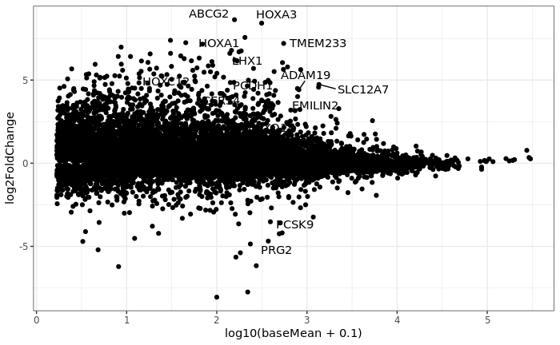

Mean–Average (MA) plot
An MA plot (Mean–Average plot) visualizes differential expression results by relating expression strength to log fold change for each gene. Each point represents a gene, with the x-axis showing the average expression level across all samples (often on a log scale) and the y-axis showing the log2 fold change between two conditions. This representation helps assess whether observed fold changes depend on expression level and highlights systematic biases in the data.
Genes with no systematic change between conditions cluster around a log fold change of zero, while differentially expressed genes appear as points deviating upward or downward. At low expression levels, fold changes tend to be more variable, resulting in a wider spread of points; at higher expression levels, fold changes are typically more stable. For this reason, MA plots are particularly useful for evaluating normalization performance and the effectiveness of fold-change shrinkage methods, which aim to reduce exaggerated fold changes for lowly expressed genes.
As with volcano plots, the appearance of an MA plot depends on preprocessing and modeling choices, including normalization, filtering of low-count genes, and whether shrunken or raw fold changes are shown. Interpretation should therefore focus on overall patterns and trends rather than individual low-expression genes, and candidate genes should be considered in the context of their expression levels and biological plausibility.
